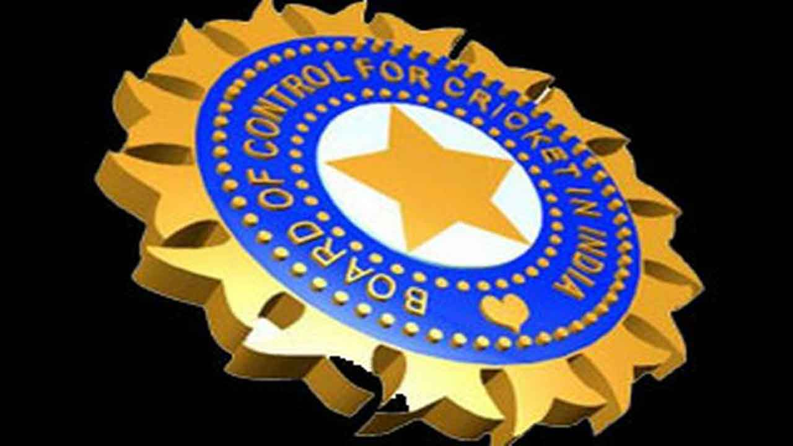
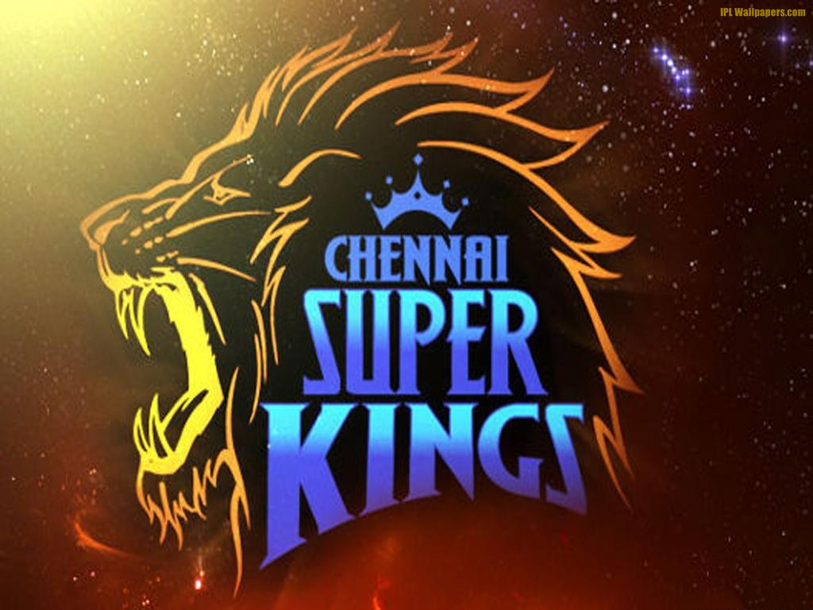
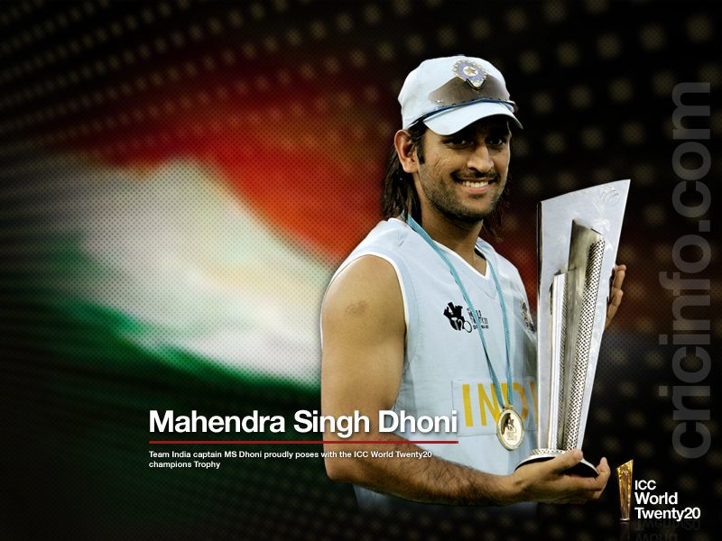

BCCI
The Board of Control for Cricket in India (BCCI) is the national governing body for cricket in India. The board was formed in December 1928 as a society, registered under the Tamil Nadu Societies Registration Act. It is a consortium of state cricket associations and the state associations select their representatives who in turn elect the BCCI officials.The BCCI logo is derived from the emblem of the Order of the Star of India, the Indian national emblem during the colonial period
CSK
Chennai Super Kings (abbreviated as CSK) is a franchise cricket team based in Chennai, Tamil Nadu, India. Founded in 2008, the team was captained by Mahendra Singh Dhoni and coached by Stephen Fleming.The Super Kings was the most successful team in the IPL till 2015 reaching at least playoffs in every single season it has participated in with a win percentage of 60.68%[4] and had won the title twice in succession (2010 and 2011).
MSD
An attacking right-handed middle-order batsman and wicket-keeper, he is widely regarded as one of the greatest finishers in limited-overs cricket.Under his captaincy, India won the 2007 ICC World Twenty20, the CB Series of 2007–08, the 2010 Asia Cup, the 2011 ICC Cricket World Cup and the 2013 ICC Champions Trophy. In the final of the 2011 World Cup, Dhoni scored 91 not out off 79 balls to take India to victory for which he was awarded the Man of the Match.